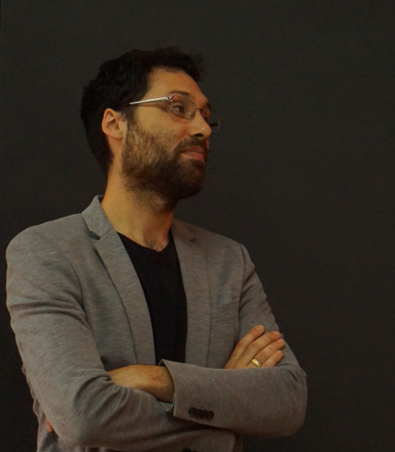

Welcome
Hello, my name is Pablo Huijse Heise and this is my personal webpage. It hosts a short bio, some pictures and a couple of interesting links. For more on my work please see:
- My full CV (pdf)
- My github repositories
- My Google Scholar profile
- My ResearchGate profile
Short bio

Pablo was born in Valdivia, Chile in 1985. He received his B.Sc. and P.E. degrees in Electrical Engineering from the Universidad de Chile in 2009. He received his PhD degree in Electrical Engineering from the Universidad de Chile in 2014. In 2015-2017 he was a postdoc at the Millennium Institute of Astrophysics (MAS). Since 2018 he is a young researcher at MAS and an assistant professor at the Informatics Institute, Universidad Austral de Chile.
He is interested in computational methods to analyze astronomical images and time series. His expertise is in the fields of machine/deep learning, bayesian inference, statistical signal processing and information theory. He collaborates in the ALeRCE project, where we aim at building a system to automatically process data from synoptic surveys.
On a more personal note when can say that, although he is not very good at sports, he runs pretty fast and swims like a fish. He trust in his cooking skills and he is bit obsessed with specialty coffee. He enjoys having long talks and playing PC videogames with his brother. He loves his wife very much.
He is interested in computational methods to analyze astronomical images and time series. His expertise is in the fields of machine/deep learning, bayesian inference, statistical signal processing and information theory. He collaborates in the ALeRCE project, where we aim at building a system to automatically process data from synoptic surveys.
On a more personal note when can say that, although he is not very good at sports, he runs pretty fast and swims like a fish. He trust in his cooking skills and he is bit obsessed with specialty coffee. He enjoys having long talks and playing PC videogames with his brother. He loves his wife very much.
Educational material
- Book on Bayesian Learning and Deep Neural Networks
- Book on Supervised Learning (in spanish)
- Book on Python for data science and scientific computing (in spanish)
- Book on Monte Carlo methods (in spanish)
- Slides for "Deep learning for astronomical time series", keynote at LACCI 2021
- Slides for "Novel deep learning architectures for astronomical time series", seminar at UACh presenting my current research project (FONDECYT regular 1211374, 2021-2023)
- Slides for "AI y redes neuronales artificiales", a talk I've given at secondary schools in Valdivia, Chile